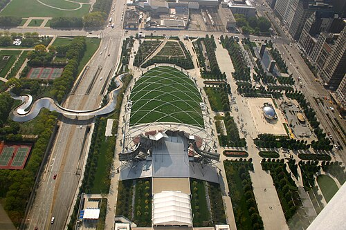
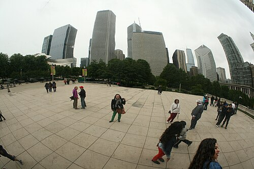

This map shows 20 of the most-searched sights in Chicago as photo spots, ranked by how often people search for them: Millennium Park, Willis Tower, Cloud Gate (The Bean), Navy Pier and Field Museum lead the list. Every spot has a pin on the subject and a phone icon showing where to stand, with tips for shooting it on your phone: which lens to use, how to frame it, a settings tip and the best time of day. Directions and Navigate buttons take you to the standing point on foot or by public transport. 3 spots are free to view; the full map is for members.
The 3 free photo spots
1Millennium Park

Millennium Park was Chicago's top tourist destination in 2017, and it is easy to see why it works so well on a phone. Within a few minutes' walk you get a mirror-like sculpture that reflects the skyline, a curving steel walkway, fountains and tall columns, all with the Michigan Avenue buildings behind. The park opened in July 2004 and covers about 24.5 acres in the north-west corner of Grant Park. Because it sits on top of parking garages and rail lines, it is described as the world's largest rooftop garden. Expect company. Cloud Gate, the curved mirror sculpture known as the Bean, is the recommended viewpoint nearby and the park's biggest photo draw. The curved surface bends the skyline and sky into one shape, so you can take a photo that is part sculpture and part city. The north and south ends of the sculpture are the best places to frame it. For a wider view of the park, try the ledge on the west side overlooking the skating rink. If you have time, Nichols Bridgeway and Wrigley Square give two different views of the park and the buildings around it. Allow time to wait for a gap in the crowd, and take a few frames rather than one.
Where it is: Millennium Park is in the Loop, Chicago's downtown, in the north-west corner of Grant Park beside Michigan Avenue. It is bounded by Michigan Avenue, Randolph Street, Columbus Drive and East Monroe Drive.
Shooting it on your phone
Lens: Start with the default lens (1x) for the Bean and its reflection. Switch to ultra-wide (0.5x) from the west-side ledge to fit in the rink, the sculpture and the skyline, and use telephoto (2x or more) for a tighter crop of the reflected buildings.
Where to stand: Stand right at the subject (north and south ends of the sculpture; for the park skyline, the west-side ledge overlooking the skating rink). The park's most famous view: the curved mirror surface reflecting the Chicago skyline and sky, with the park and Michigan Avenue buildings around it.
Framing: Turn on gridlines and place the Bean's curve on one of the lines, so the reflected skyline sits in the upper part of the frame. Crouch slightly to keep the horizon of the reflection tidy. For a different view of the park, try Nichols Bridgeway with its curving walkway in the foreground, or Wrigley Square with the tall columns and fountain framing the buildings behind.
Settings tip: Tap the brightest part of the reflection to focus, then drag the exposure slider down a little so the sky keeps its detail. Wipe your lens first, and use the 0.5x lens for wide shots of the park.
Best time: Early morning or late evening is best if you want fewer people in the frame. One guide says late afternoon light is best, so try more than one visit if you can.
3Cloud Gate (The Bean)

Cloud Gate, known to nearly everyone as The Bean, is a giant polished steel sculpture by Anish Kapoor in Millennium Park, in the Loop. It was built between 2004 and 2006 and formally dedicated on 15 May 2006. It is made of 168 steel plates joined so smoothly that you can't see a seam. It measures about 10 by 20 by 13 m. Its shape is inspired by liquid mercury, and that is why it photographs so well: the surface works like a curved mirror, bending the Loop skyline and the clouds into one swirling picture. You can walk right under the arch, where a hollow in the underside, called the omphalos, multiplies and twists the reflections above you.
For the classic postcard, walk to the west side of the sculpture, on Grainger Plaza (formerly called AT&T Plaza), where the skyline sits in the curve of the steel. For a wider view of the whole Bean, step back from it within the same plaza so more of the towers behind it fit into the frame. Underneath the arch you can shoot upwards into the omphalos for a very different, abstract picture. The surface shows everything in front of it, so you will appear in your own photo. Use that on purpose, or shift a step to one side. Crowds are usually thickest from late morning, so an early start gives you cleaner reflections and fewer people walking through the frame.
Where it is: Cloud Gate stands in Millennium Park, in the Loop area of central Chicago. It sits between the Chase Promenade and the McCormick Tribune Plaza & Ice Rink, a short way south of Randolph Street.
Shooting it on your phone
Lens: Start with the default lens (1x) for the skyline reflection. Switch to ultra-wide (0.5x) under the arch or when you are close to the steel. Use the telephoto (2x or more, depending on your phone) to pick out a single building or a patch of reflected sky.
Where to stand: Stand right at the subject: the phone icon on the map marks the spot. For the skyline reflection, walk to the west side of the sculpture, on Grainger Plaza (formerly AT&T Plaza), where the Bean's curved surface bends the Loop skyline, with the real buildings behind it. A step to one side changes the framing, so try a couple of spots before settling. For a wider shot of the whole Bean, step back from it within the same plaza.
Framing: Turn on gridlines and place the curve of the reflected skyline along one of the lines. Keep your phone low and close to your body so you take up less space in the mirror. For something different, go under the arch and aim up into the omphalos, where reflections of people and buildings are warped and repeated.
Settings tip: Tap the reflected skyline to set focus, then drag the exposure slider down a little. This keeps the bright steel and sky from washing out. Take a few shots, because people moving through the reflection will change each frame.
Best time: Early morning, before the crowds build up. Midday sun can cause glare on the steel, and warm days get busy from late morning.
15Jay Pritzker Pavilion
The Jay Pritzker Pavilion is the bandshell at the heart of Millennium Park, designed by Frank Gehry. Its ribbons of stainless steel curl outwards from the stage like a metal headdress, and above the lawn a lattice of steel trellis carries the sound system. That mix of shiny curves and criss-crossing lines gives your phone plenty to work with. The pavilion opened on 16 July 2004 and holds up to 11,000 people. It is home to the Grant Park Music Festival, a free outdoor classical series.
From this raised spot the steel shell looks like a set of sails, with the Loop skyline rising behind it. Photographers say it is also less crowded than the straight-on view from the seating area. The bridge was designed by Gehry too, partly to shut out street noise from the pavilion.
If you want a closer, more abstract picture, go down to the lawn and shoot upwards at the steelwork. A quieter alternative is the Lurie Garden, where plants can frame a partial view of the stage. Drones are not allowed over the park or pavilion.
Where it is: In the Loop, in Millennium Park, on the south side of Randolph Street. Millennium Park sits in the north-west corner of the larger Grant Park, between Michigan Avenue and Lake Michigan.
Shooting it on your phone
Lens: Start with the ultra-wide (0.5x) to take in the whole steel shell with the skyline behind it. Switch to the default lens (1x) for a cleaner, less stretched view. If your phone has a telephoto (2x-5x), use it to pick out the folds of the steel.
Where to stand: Stand on BP Bridge (east side of the pavilion, looking back west toward the stage). A wider view of the pavilion's curved steel shell with the Loop skyline rising behind it.
Framing: Turn on the gridlines and keep the stage roughly central, with the skyline filling the top of the frame. Hold the phone level so the buildings don't lean. As a different angle, try the Lurie Garden, where plants can frame a partial view of the stage across the planting.
Settings tip: Tap on the steel to set focus, then slide the exposure down a little if the shiny metal or bright sky looks washed out. Tap and hold if you want to lock focus and exposure before you reframe.
Best time: Softer light away from harsh midday sun tends to be kinder to shiny metal, so check how the steel looks on your screen and adjust the exposure if needed.
17 more spots for members
These spots are on the map as grey numbered pins. Where to stand, the phone tips, photos and directions for them come with Explorer membership.
- 2Willis Tower · members
- 4Navy Pier · members
- 5Field Museum · members
- 6Art Institute of Chicago · members
- 7Shedd Aquarium · members
- 8Chicago Riverwalk · members
- 9John Hancock Center · members
- 10Adler Planetarium · members
- 11Chicago Theatre · members
- 12Tribune Tower · members
- 13Wrigley Building · members
- 14Marina City · members
- 16Chicago Cultural Center · members
- 17Chicago Board of Trade Building · members
- 18Crown Fountain · members
- 19Buckingham Fountain · members
- 20Chicago Water Tower · members
Get every spot with Explorer membership
Explorer opens every spot on every map in the library: where to stand, how to frame it on your phone and how to get there, plus the Xdatrys Maps app with maps saved on your phone for use without signal. $9.99 a month or $59.99 a year; cancel any time.
Join Explorer Compare free and Explorer
Not ready to join?
Get Pocket Lens, our free daily smartphone travel photography newsletter.
Free, and you can unsubscribe at any time. If the form does not show, sign up on our newsletter page.
Questions
What are the top photo spots in Chicago?
The first three on this map are Millennium Park, Willis Tower and Cloud Gate (The Bean). They are ranked by how often people search for them. The full map has 20.
Where should I stand to photograph Millennium Park?
Stand right at Millennium Park (north and south ends of the sculpture; for the park skyline, the west-side ledge overlooking the skating rink). Start with the default lens (1x) for the Bean and its reflection.
When is the best time to photograph Cloud Gate (The Bean)?
Early morning, before the crowds build up. Midday sun can cause glare on the steel, and warm days get busy from late morning.
How do I get to Pritzker Pavilion?
Head for Millennium Park on Randolph Street.
Credits
Map data © OpenStreetMap contributors (ODbL); base map built with Protomaps from OpenStreetMap data. Photos from Wikimedia Commons, credited under each photo with their licence. Background reading for the free spots: Millennium Park, Cloud Gate, Jay Pritzker Pavilion (Wikipedia, CC BY-SA). Access rules and opening times change: check before you go.